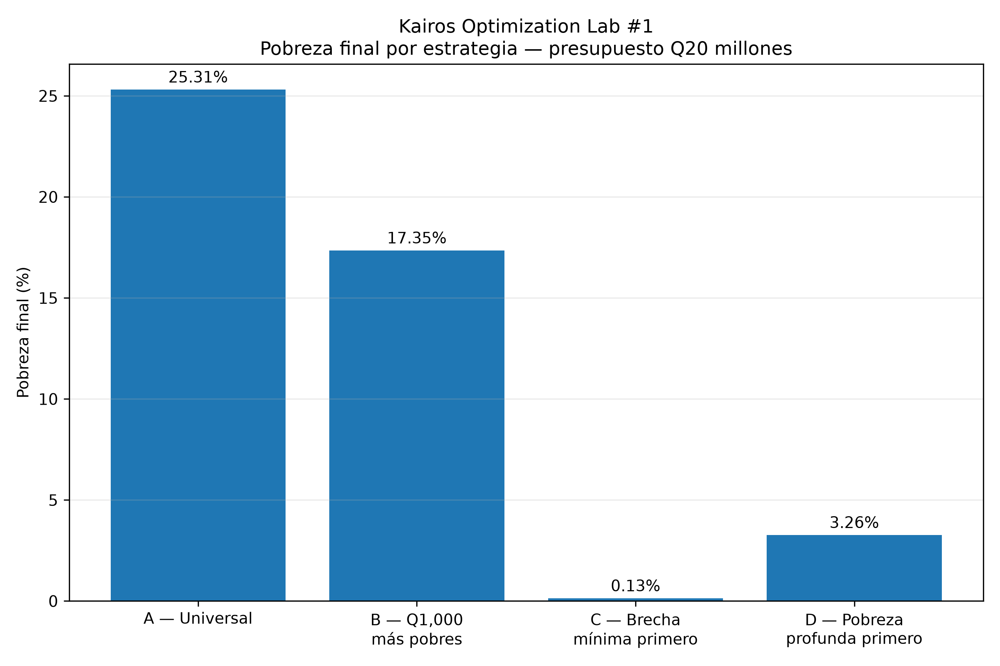
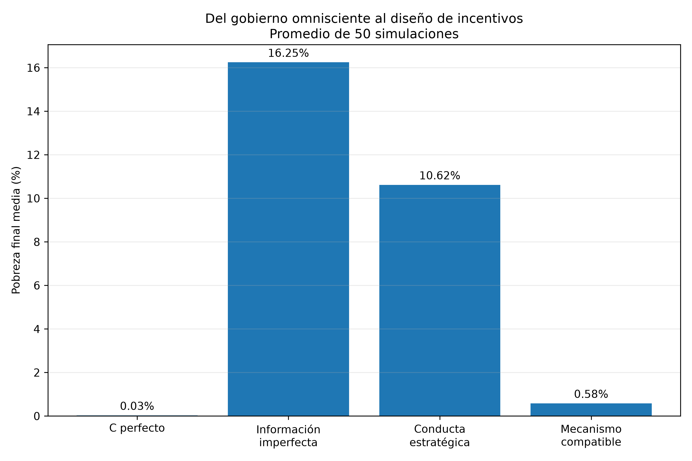
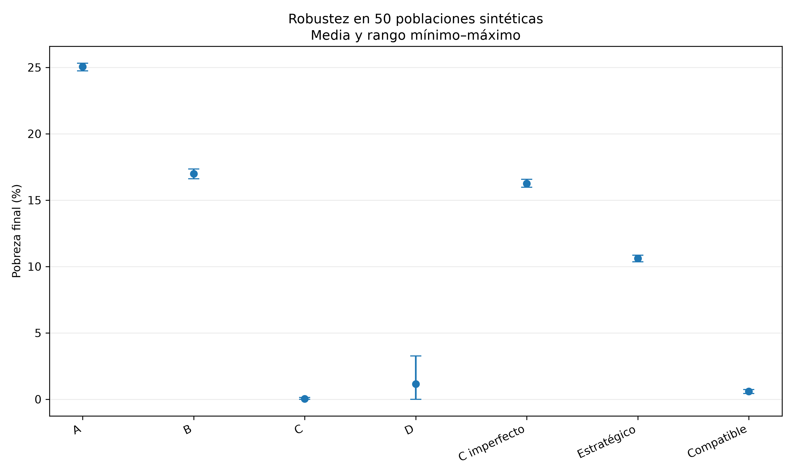
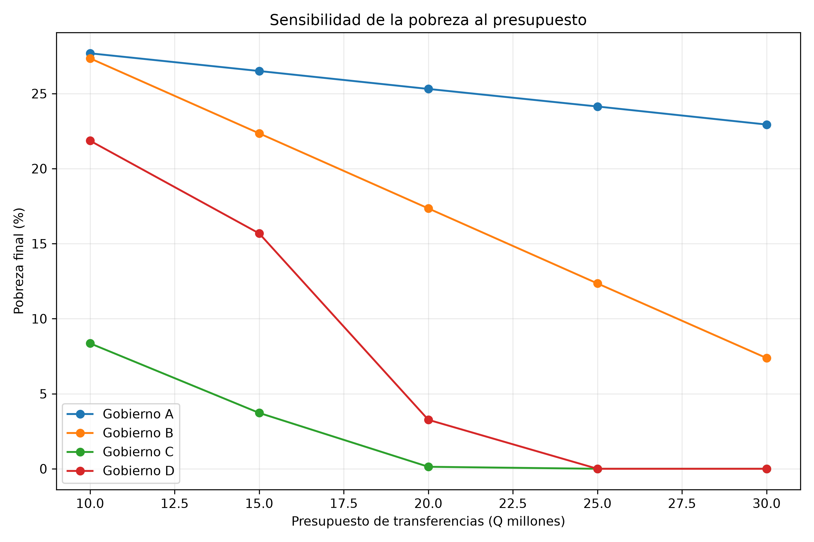

Kairos Laboratorio · Optimization Lab #1 — nota técnica
¿Por qué darle dinero a los pobres no soluciona el problema?
Metodología, ecuaciones, algoritmos, resultados, sensibilidad, Monte Carlo, teoría de juegos, supuestos y límites del experimento. Documento de acompañamiento a la versión divulgativa.
Contenido de esta nota
1. Parámetros del experimento
Todos los resultados de este documento se derivan de la siguiente configuración base. Las secciones de sensibilidad y Monte Carlo indican explícitamente cuándo un parámetro se mueve respecto a esta tabla.
2. Medición de la pobreza
La brecha individual de un hogar i con ingreso y_i, frente a una línea z, se define como:
Sobre esa definición construimos las tres medidas Foster–Greer–Thorbecke, estándar en la literatura de pobreza:
FGT0 (α=0) es el headcount: la proporción de hogares pobres. FGT1 (α=1) es la brecha promedio normalizada, sensible a cuánto le falta a cada hogar. FGT2 (α=2) pondera al cuadrado la brecha relativa, y por tanto es sensible a la desigualdad entre los pobres: penaliza más fuerte a quienes están muy por debajo de la línea.
3. Resultados base: cuatro estrategias, un presupuesto
Baseline (sin transferencia): FGT0 = 0.2997, FGT1 = 0.1012, FGT2 = 0.0476 — equivalente a 29,971 hogares pobres y una brecha agregada de Q20,232,300.65.
| Estrategia | FGT0 | FGT1 | FGT2 | Hogares que salen | Brecha restante (Q) | Gasto (Q) |
|---|---|---|---|---|---|---|
| A — Universal | 0.2531 | 0.0735 | 0.0302 | 4,662 | 14,700,179.40 | 20,000,000.00 |
| B — Q1,000 a los más pobres | 0.1735 | 0.0202 | 0.0034 | 12,623 | 4,030,672.00 | 20,000,000.00 |
| C — brecha mínima primero | 0.0013 | 0.0012 | 0.0010 | 29,837 | 233,786.52 | 19,998,514.12 |
| D — pobreza profunda primero | 0.0326 | 0.0012 | 0.0001 | 26,707 | 232,300.65 | 20,000,000.00 |

La propiedad degenerada de minimizar la brecha agregada lineal
Mientras un hogar siga por debajo de la línea, cada quetzal que recibe reduce la brecha agregada en aproximadamente un quetzal, sin importar si ese hogar estaba a Q10 o a Q1,900 de cruzarla. Esa linealidad explica por qué C y D pueden llegar a un FGT1 casi idéntico (0.0012 en ambos) pese a construirse con criterios de priorización opuestos: C ordena por brecha mínima (maximiza el número de hogares que cruzan la línea con el menor gasto posible, optimizando FGT0), mientras D ordena por brecha máxima (un criterio distributivo que prioriza a los más pobres entre los pobres). El resultado es que D obtiene un FGT2 considerablemente menor (0.0001 contra 0.0010): al concentrarse en las brechas más profundas, D reduce mejor la desigualdad remanente entre quienes siguen pobres, aunque deje a más hogares por debajo de la línea que C.
No existe una "estrategia óptima" única. C es preferible si el objetivo de política es el headcount (cuántos hogares cruzan la línea). En este experimento, D produjo un FGT2 considerablemente menor que C y representa una estrategia distributiva orientada a priorizar las brechas más profundas, aunque no demostramos que sea la solución óptima global para minimizar esa medida. Elegir entre ambas es una decisión de objetivo, no un problema técnico que la optimización resuelva por sí sola.
4. Información imperfecta
Sustituimos el ingreso observado por una versión con error de medición gaussiano:
El gobierno aplica el algoritmo de brecha mínima (C) sobre ŷ_i en vez de y_i. Esto genera errores de inclusión (falsos positivos: hogares no pobres que reciben transferencia) y de exclusión (falsos negativos: hogares pobres que quedan fuera), y una fracción del presupuesto que se "filtra" (leakage) hacia hogares que no eran el objetivo.
| σ (Q) | Pobreza final (FGT0) | Leakage |
|---|---|---|
| 0 | 0.13% | 0% |
| 100 | 15.21% | 3.02% |
| 250 | 15.51% | 7.58% |
| 500 | 16.48% | 15.58% |
| 750 | 17.78% | 23.16% |
| 1000 | 19.13% | 30.42% |
Al σ de referencia (Q500): 4,402 falsos positivos, 4,694 falsos negativos, leakage de 15.58%, pobreza final de 16.48% y una brecha restante aproximada de Q6.39 millones. El salto entre σ=0 y σ=100 es el más brusco de toda la tabla: basta un error de medición modesto para que un algoritmo casi perfecto se degrade a un nivel de pobreza similar al de la estrategia B con información perfecta. La curva se aplana después: duplicar el error de σ500 a σ1000 empeora la pobreza final en poco más de 2.6 puntos porcentuales, muy por debajo del salto inicial.
Los escenarios de información imperfecta (esta sección) y comportamiento estratégico (sección siguiente) se evalúan por separado, como stress tests independientes del mecanismo base con información perfecta. No representan perturbaciones acumulativas del mismo modelo: el modelo estratégico no parte del ingreso con error de medición ε_i, sino del ingreso reportado bajo la regla de auditoría y sanción publicada.
5. Modelo estratégico
Cada hogar elige cuánto ingreso ocultar en su reporte para maximizar su utilidad esperada:
donde la acción disponible es un ocultamiento discreto:
El costo esperado de manipular combina el costo fijo de intentarlo con el valor esperado de la sanción si la auditoría detecta la manipulación: con probabilidad de auditoría p y sanción F veces lo ocultado, el costo esperado de ocultar una cantidad a es 25 + pFa cuando a > 0.
Con los parámetros base (p = 10%, F = 2), la distribución de decisiones fue:
| Decisión | Hogares |
|---|---|
| Honestos | 61,623 |
| Ocultan Q250 | 125 |
| Ocultan Q500 | 38,252 |
| Total que manipula | 38,377 (38.38%) |
Bajo esta conducta estratégica, el algoritmo de asignación (aplicado sobre los ingresos reportados, no los reales) produjo: pobreza final de 10.85%, 19,116 hogares que cruzan la línea, una brecha restante de Q12,441,168.04, y un gasto de aproximadamente Q19,998,798.87 — prácticamente el presupuesto completo.
Descomponer ese gasto muestra dónde se pierde eficacia: de los cerca de Q20 millones desembolsados, solo Q7.791 millones reducen efectivamente la brecha inicial. Otros Q9.558 millones son sobretransferencia a hogares que ya eran pobres antes de manipular su reporte (reciben más de lo que su brecha real requería), y Q2.650 millones llegan a hogares que no eran pobres en absoluto antes de manipular su ingreso reportado.
El presupuesto se gasta casi en su totalidad, pero una fracción sustancial (≈61% de lo desembolsado) no cierra brecha real: se destina a sobretransferencia o a hogares no objetivo. La conducta estratégica no reduce el gasto ejecutado; reduce su efectividad.
6. Compatibilidad de incentivos
Para que un hogar no tenga incentivo a ocultar Q500, el costo esperado de hacerlo debe ser al menos igual al beneficio:
Resolviendo para el producto pF:
Este umbral es una condición sobre el producto de la probabilidad de auditoría y la sanción, no sobre cada uno por separado: cualquier combinación que alcance pF = 0.95 es, en el margen, suficiente para volver la manipulación no rentable. La simulación validó la frontera exacta en los siguientes puntos:
| Sanción (F) | Auditoría mínima (p) |
|---|---|
| 2× | 47.5% |
| 3× | 31.67% |
| 5× | 19% |
| 10× | 9.5% |
Nótese que p × F ≈ 0.95 se mantiene aproximadamente constante en las cuatro filas, confirmando que la condición derivada algebraicamente es la que gobierna el punto de quiebre observado en la simulación.
7. Costo de fiscalización y restricción presupuestaria
Auditar no es gratis: cada auditoría cuesta Q100 en el experimento. El presupuesto total del programa debe cubrir tanto transferencias como fiscalización:
donde T es el monto transferido y A el costo total de auditoría (proporción auditada × N × Q100). Esto introduce un trade-off explícito: cada punto porcentual adicional de auditoría implica auditar 1,000 hogares más, porque
Esos Q100,000 adicionales por cada punto porcentual de auditoría ya no están disponibles para transferencias.
En el punto de compatibilidad de incentivos más eficiente en este experimento —auditoría de 9.5% con sanción de 10×—, el costo de fiscalización es 9,500 hogares auditados × Q100 = Q950,000, dejando aproximadamente Q19.05 millones para transferencias. Bajo este mecanismo, la manipulación cae a 0% y la pobreza final promedio (sobre 50 simulaciones) es de 0.58%.

El contraste entre las cuatro barras resume el argumento central del experimento, aunque no debe leerse como una secuencia: son cuatro pruebas independientes del mismo algoritmo base, cada una con una fricción distinta. La brecha entre el benchmark de información perfecta (0.03%) y el stress test de comportamiento estratégico no corregido (10.62% en promedio) se explica por el diseño de información e incentivos de cada prueba — el presupuesto y el algoritmo de focalización son idénticos en los cuatro casos, pero la fricción evaluada no se acumula de una barra a la siguiente.
8. Monte Carlo: robustez sobre 50 poblaciones
Repetimos el pipeline completo —generación de población, focalización, información imperfecta, conducta estratégica y mecanismo compatible— sobre 50 poblaciones sintéticas independientes de 100,000 hogares, para un total de 5,000,000 de hogares sintéticos generados a lo largo de las 50 simulaciones.
| Escenario | Media | Desv. estándar | Mínimo | Máximo |
|---|---|---|---|---|
| A — Universal | 25.05% | 0.145 pp | 24.733% | 25.323% |
| B — Q1,000 más pobres | 16.98% | 0.205 pp | 16.618% | 17.355% |
| C — perfecto | 0.03% | 0.041 pp | 0.000% | 0.134% |
| D — pobreza profunda | 1.15% | 1.178 pp | 0.000% | 3.264% |
| C — imperfecto (σ=500) | 16.25% | 0.135 pp | 15.964% | 16.569% |
| Estratégico (sin corrección) | 10.62% | 0.123 pp | 10.356% | 10.855% |
| Compatible (mecanismo) | 0.58% | 0.083 pp | 0.427% | 0.728% |

El escenario D es, con diferencia, el más variable: una desviación estándar de 1.178 puntos porcentuales, con un rango que va de 0% a 3.264% de pobreza final entre las 50 poblaciones. Esto es consistente con su diseño: al priorizar las brechas más profundas primero, D es más sensible a la forma específica de la cola inferior de la distribución de ingresos en cada población generada. C, en cambio, es notablemente estable (desviación estándar de apenas 0.041 puntos porcentuales), reflejando que ordenar por brecha mínima es un criterio robusto a la forma exacta de la distribución.
9. Sensibilidad presupuestaria
La estrategia C (brecha mínima primero) se ejecutó con presupuestos de Q10, 15, 20, 25 y 30 millones. Se reporta la tabla completa para las cuatro estrategias.
| Presupuesto (Q) | Estrategia | Pobreza final | Hogares que salen | Brecha restante (Q) | Gasto (Q) |
|---|---|---|---|---|---|
| 10,000,000 | A | 27.684% | 2,287 | 17,350,406.98 | 10,000,000.00 |
| 10,000,000 | B | 27.348% | 2,623 | 10,416,717.59 | 10,000,000.00 |
| 10,000,000 | C | 8.357% | 21,614 | 10,233,012.21 | 9,999,288.43 |
| 10,000,000 | D | 21.859% | 8,112 | 10,232,300.65 | 10,000,000.00 |
| 15,000,000 | A | 26.503% | 3,468 | 15,994,684.75 | 15,000,000.00 |
| 15,000,000 | B | 22.348% | 7,623 | 6,673,066.72 | 15,000,000.00 |
| 15,000,000 | C | 3.722% | 26,249 | 5,233,240.88 | 14,999,059.77 |
| 15,000,000 | D | 15.682% | 14,289 | 5,232,300.65 | 15,000,000.00 |
| 20,000,000 | A | 25.309% | 4,662 | 14,700,179.40 | 20,000,000.00 |
| 20,000,000 | B | 17.348% | 12,623 | 4,030,672.00 | 20,000,000.00 |
| 20,000,000 | C | 0.134% | 29,837 | 233,786.52 | 19,998,514.12 |
| 20,000,000 | D | 3.264% | 26,707 | 232,300.65 | 20,000,000.00 |
| 25,000,000 | A | 24.139% | 5,832 | 13,464,024.75 | 25,000,000.00 |
| 25,000,000 | B | 12.348% | 17,623 | 2,437,605.06 | 25,000,000.00 |
| 25,000,000 | C | 0.000% | 29,971 | 0.00 | 20,232,300.65 |
| 25,000,000 | D | 0.000% | 29,971 | 0.00 | 20,232,300.65 |
| 30,000,000 | A | 22.937% | 7,034 | 12,287,349.61 | 30,000,000.00 |
| 30,000,000 | B | 7.377% | 22,594 | 1,903,594.73 | 29,971,000.00 |
| 30,000,000 | C | 0.000% | 29,971 | 0.00 | 20,232,300.65 |
| 30,000,000 | D | 0.000% | 29,971 | 0.00 | 20,232,300.65 |

Saturación y rendimientos marginales
C y D saturan entre Q20M y Q25M: en ambas, el gasto ejecutado a partir de Q25M se congela en Q20,232,300.65, exactamente la brecha agregada inicial de la población. Una vez que todo hogar pobre cruza la línea, ya no existe brecha que cerrar bajo el objetivo modelado, de modo que el gasto adicional disponible simplemente no se ejecuta:
B satura también, pero por una razón distinta: a Q30M, B ejecuta Q29,971,000.00 — exactamente Q1,000 por cada uno de los 29,971 hogares originalmente pobres — y no los Q30M completos, porque su regla ("Q1,000 a los más pobres") deja de tener a quién más transferir una vez que cubrió a todos los hogares pobres, aunque sobre presupuesto. Aun así, B nunca llega a 0% de pobreza en este rango: entregar un monto fijo de Q1,000 no alcanza para cerrar la brecha de los hogares cuya brecha original superaba esa cifra. A, por su diseño universal, nunca satura dentro de este rango de presupuestos: sigue gastando el 100% de cada incremento porque reparte entre los 100,000 hogares sin condicionar a su nivel de pobreza.
10. Limitaciones
Esta sección es deliberadamente extensa. Ninguno de los resultados anteriores debe leerse fuera de este marco.
- La población y los ingresos son enteramente sintéticos, generados por el modelo; no provienen de ENCOVI, del INE ni de ningún registro administrativo.
- Q2,000 no es una línea de pobreza oficial de Guatemala; es un parámetro experimental elegido por conveniencia del diseño.
- Q20 millones no representa, en ninguna escala, el presupuesto que costaría eliminar la pobreza en Guatemala.
- Los parámetros conductuales (probabilidad de auditoría, sanción, costo fijo de manipular, distribución de las acciones de ocultamiento) no fueron estimados empíricamente; son supuestos de diseño para ilustrar el mecanismo.
- El modelo no incorpora oferta laboral: los ingresos no responden a la transferencia recibida.
- El modelo no incorpora inflación ni efectos de equilibrio general sobre precios.
- El modelo no incorpora informalidad de manera estructural.
- El modelo no incorpora dinámica intertemporal: cada simulación es una fotografía estática, no una trayectoria de varios períodos.
- El modelo no incorpora composición del hogar ni economías de escala dentro del hogar.
- Las sanciones se asumen creíbles y perfectamente ejecutables; no se modela capacidad institucional limitada para hacerlas cumplir.
- El costo administrativo de Q100 por auditoría es un valor experimental, no un costo real de fiscalización.
- El modelo estratégico representa la mejor respuesta individual de cada hogar frente a una regla publicada — no es un equilibrio de Nash completo entre los 100,000 hogares, que podría incorporar interacciones estratégicas entre ellos.
Ningún resultado de este documento debe extrapolarse causalmente a la pobreza real de Guatemala.
11. Próximo paso
Una futura investigación de Kairos aplicará este mismo marco —focalización, información imperfecta, conducta estratégica y compatibilidad de incentivos— a datos reales de Guatemala, utilizando fuentes oficiales y restricciones fiscales e institucionales reales. Esa estimación no se intenta en esta publicación.